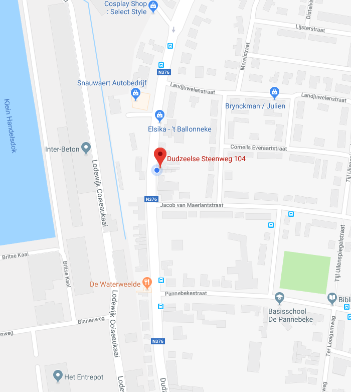

<ion-header>
  <ion-navbar>
    <ion-title>
      Info
    </ion-title>
  </ion-navbar>
</ion-header>

<ion-content padding>
  <ion-card>

    
    <ion-fab right top>
      <button ion-fab>
        <ion-icon name="pin" (click)="navme('Dudzeelse steenweg 104, 8000 Brugge')"></ion-icon>
      </button>
    </ion-fab>
  
    <ion-item>
      <ion-icon name="ios-basket-outline" item-start large></ion-icon>
      <h2>Bakkerij TVB</h2>
      <p>Dudzeelse steenweg 104, 8000 Brugge</p>
    </ion-item>
  
    <ion-item>
      <span item-left>18 min</span>
      <span item-left>(2.6 mi)</span>
      <button ion-button icon-left clear item-end (click)="navme('
      Dudzeelse Steenweg 104,
      8000 Brugge')">
        <ion-icon name="navigate" ></ion-icon>
        Start
      </button>
    </ion-item>
  
  </ion-card>
</ion-content>
